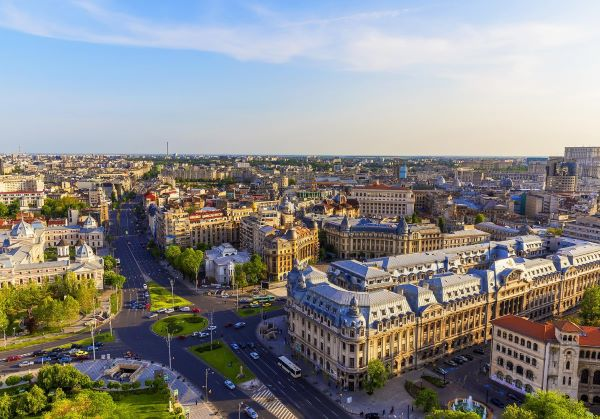
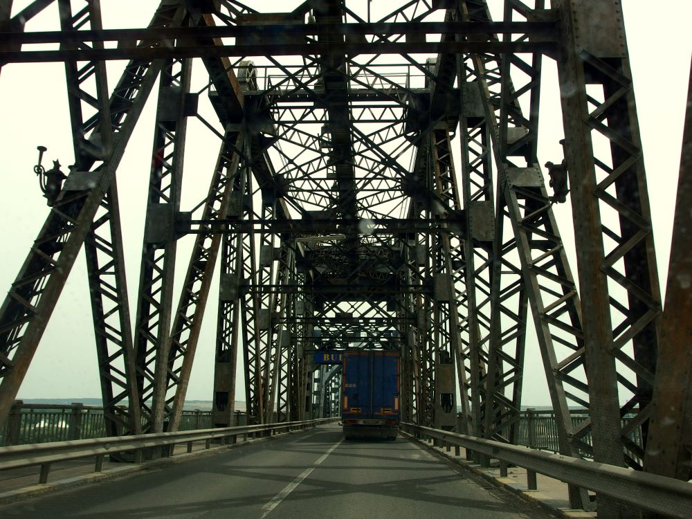
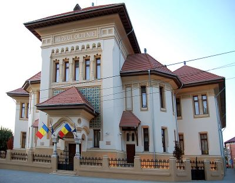
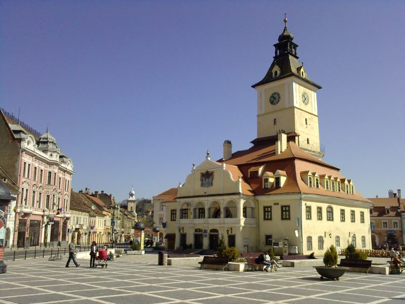
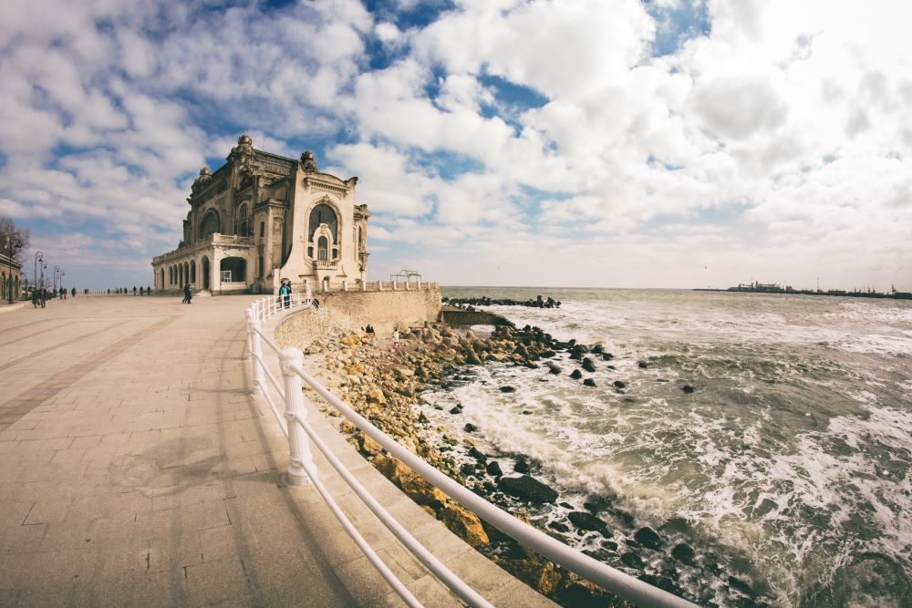
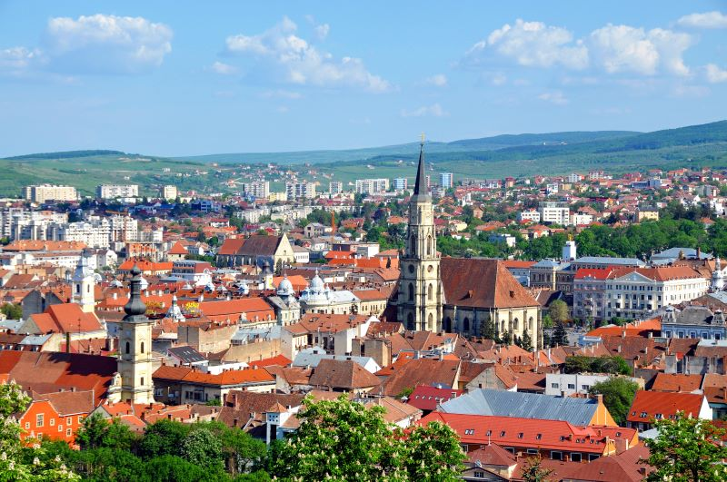
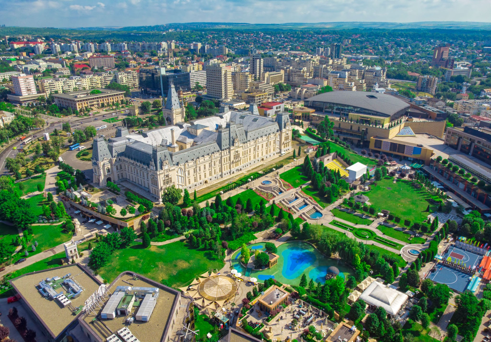
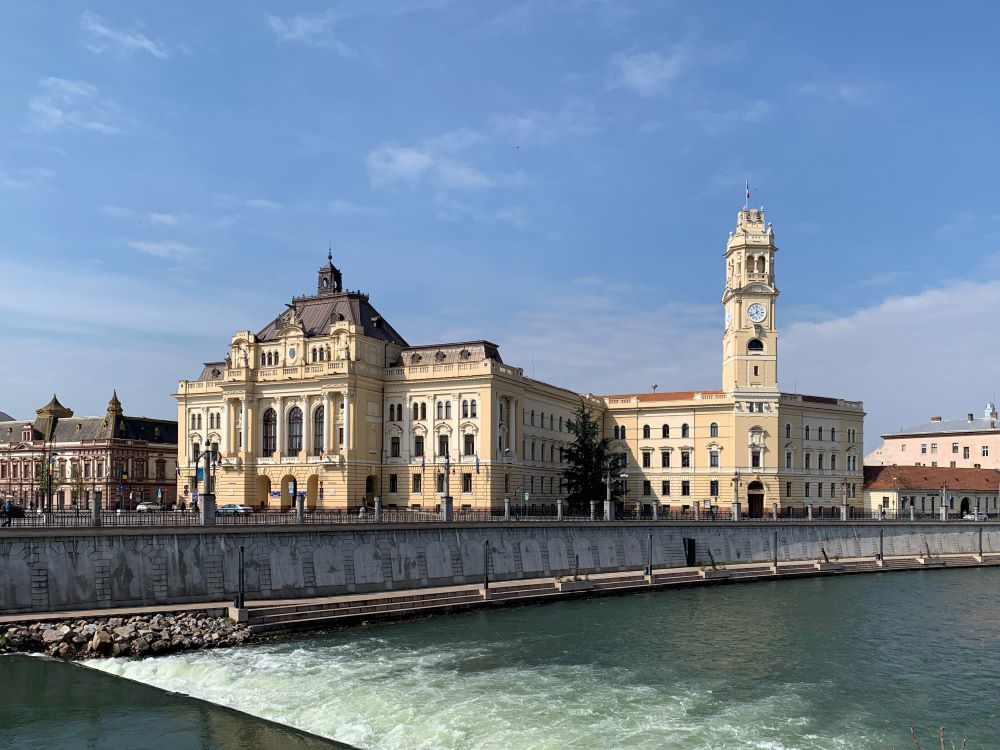

-

Bucharest
Bucharest, the vibrant capital of Romania, is a blend of historic charm and modern energy. Known for its eclectic architecture, from grand Belle Epoque buildings to communist-era landmarks, it offers bustling streets, lively cafes, and a rich cultural scene.
-

Giurgiu
Giurgiu is a pictureresque town situated in southern Romania, along the Danube River. Known for its rich history and strategic location, it offers charming architecture, including the iconic Clock Tower, and serves as an important economic and cultural hub in the region. With its proximity with Bulgaria, Giurgiu also serves as a gateway for cross-border trade and tourism.
-

Craiova
Craiova, located in southwestern Romania, is a vibrant city with a blend of historical charm and amenities. It's renowned for its cultural heritage, featuring landmarks like the 18th-century Craiova Art Museum and the stunning Nicolae Romanescu Park. As an economic center, Craiova is known for its automotive industry and academic institutions, making it a dynamic destination for both business and leisure travelers alike.
-

Brașov
Brașov is a charming city located in central Romania, surrounded by the Carpathian Mountains. Known for its medieval history, Brașov boasts a well-preserved Old Town, featuring cobbled streets, Gothic, Baroque, and Renaissance architecture. Key landmarks include the Black Church, the Council Square (Piața Sfatului), and the nearby Bran Castle, famously linked to the Dracula legend. The city is also a gateway to the Transylvanian countryside, offering both cultural richness and outdoor activities, making it a popular destination for tourists.
-

Constanta
Located on Romania’s Black Sea coast, Constanța is the country’s largest port and a major tourist destination. With a history dating back to ancient times, it is home to landmarks like the Roman Edifice with Mosaic, the Constanța Casino, and the lively Mamaia beach resort. The city blends historical sites with modern attractions and is a key hub for maritime commerce and tourism in Romania.
-

Cluj-Napoca
Cluj-Napoca, often referred to simply as Cluj, is a vibrant city in western Romania and the cultural capital of Transylvania. Known for its universities, it has a youthful and dynamic atmosphere, with a rich history reflected in sites like St. Michael's Church, the Botanical Garden, and the Transylvanian History Museum. The city is a growing center for technology and innovation, earning it the nickname "the Silicon Valley of Romania."
-

Iasi
Situated in northeastern Romania, Iași is one of the country's oldest and most significant cultural centers. Known as the "City of Great Love" or "Cultural Capital of Moldova," Iași is home to numerous historic landmarks, including the grandiose Palace of Culture, the Metropolitan Cathedral, and the famous University of Iași. It has long been a center of Romanian literature, art, and intellectual life.
-

Oradea
Located in the far northwest, near the Hungarian border, Oradea is known for its stunning Art Nouveau architecture and rich history. The city’s central square, Piața Unirii, features impressive buildings like the Black Eagle Palace and the Oradea Fortress. Oradea is also an emerging cultural and economic hub in Romania, with strong Hungarian influences and a diverse mix of traditions and modernity.